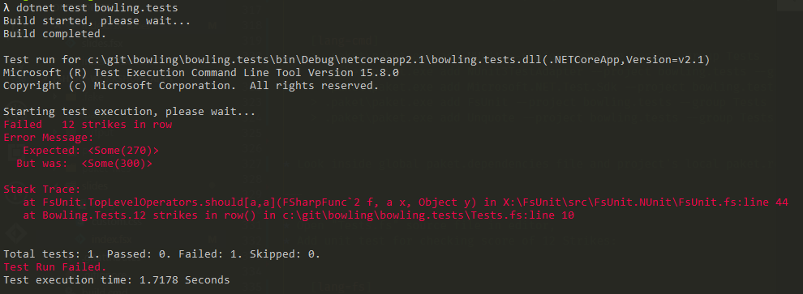

val char : char
--------------------
type char = System.Char
Full name: Microsoft.FSharp.Core.char
static val DBNull : obj
static member ChangeType : value:obj * typeCode:TypeCode -> obj + 3 overloads
static member FromBase64CharArray : inArray:char[] * offset:int * length:int -> byte[]
static member FromBase64String : s:string -> byte[]
static member GetTypeCode : value:obj -> TypeCode
static member IsDBNull : value:obj -> bool
static member ToBase64CharArray : inArray:byte[] * offsetIn:int * length:int * outArray:char[] * offsetOut:int -> int + 1 overload
static member ToBase64String : inArray:byte[] -> string + 3 overloads
static member ToBoolean : value:obj -> bool + 17 overloads
static member ToByte : value:obj -> byte + 18 overloads
...
Full name: System.Convert
(+0 other overloads)
System.Convert.ToInt32(value: string) : int
(+0 other overloads)
System.Convert.ToInt32(value: decimal) : int
(+0 other overloads)
System.Convert.ToInt32(value: float) : int
(+0 other overloads)
System.Convert.ToInt32(value: float32) : int
(+0 other overloads)
System.Convert.ToInt32(value: uint64) : int
(+0 other overloads)
System.Convert.ToInt32(value: int64) : int
(+0 other overloads)
System.Convert.ToInt32(value: int) : int
(+0 other overloads)
System.Convert.ToInt32(value: uint32) : int
(+0 other overloads)
System.Convert.ToInt32(value: uint16) : int
(+0 other overloads)
struct
member CompareTo : value:obj -> int + 1 overload
member Equals : obj:obj -> bool + 1 overload
member GetHashCode : unit -> int
member GetTypeCode : unit -> TypeCode
member ToString : unit -> string + 1 overload
static val MaxValue : char
static val MinValue : char
static member ConvertFromUtf32 : utf32:int -> string
static member ConvertToUtf32 : highSurrogate:char * lowSurrogate:char -> int + 1 overload
static member GetNumericValue : c:char -> float + 1 overload
...
end
Full name: System.Char
System.Char.IsDigit(s: string, index: int) : bool
Full name: Index.parseScore
Full name: Microsoft.FSharp.Collections.list<_>
val char : value:'T -> char (requires member op_Explicit)
Full name: Microsoft.FSharp.Core.Operators.char
--------------------
type char = System.Char
Full name: Microsoft.FSharp.Core.char
from Microsoft.FSharp.Core
val int : value:'T -> int (requires member op_Explicit)
Full name: Microsoft.FSharp.Core.Operators.int
--------------------
type int = int32
Full name: Microsoft.FSharp.Core.int
--------------------
type int<'Measure> = int
Full name: Microsoft.FSharp.Core.int<_>
Full name: Index.( |Digit|_| )
Full name: Index.parseScoreResult
Full name: Index.countScore
Full name: Index.countScoreResult
Full name: Index.optsToOpt
module List
from Microsoft.FSharp.Collections
--------------------
type List<'T> =
| ( [] )
| ( :: ) of Head: 'T * Tail: 'T list
interface IEnumerable
interface IEnumerable<'T>
member GetSlice : startIndex:int option * endIndex:int option -> 'T list
member Head : 'T
member IsEmpty : bool
member Item : index:int -> 'T with get
member Length : int
member Tail : 'T list
static member Cons : head:'T * tail:'T list -> 'T list
static member Empty : 'T list
Full name: Microsoft.FSharp.Collections.List<_>
Full name: Microsoft.FSharp.Core.Option.map
Full name: Microsoft.FSharp.Collections.List.rev
Full name: Index.oneOption
Full name: Index.bowlingScore
val string : value:'T -> string
Full name: Microsoft.FSharp.Core.Operators.string
--------------------
type string = System.String
Full name: Microsoft.FSharp.Core.string
System.String.ToCharArray(startIndex: int, length: int) : char []
from Microsoft.FSharp.Collections
Full name: Microsoft.FSharp.Collections.Array.toList
Full name: Index.bowlingScoreResult
type EntryPointAttribute =
inherit Attribute
new : unit -> EntryPointAttribute
Full name: Microsoft.FSharp.Core.EntryPointAttribute
--------------------
new : unit -> EntryPointAttribute
Full name: Microsoft.FSharp.Core.ExtraTopLevelOperators.printfn
Full name: Microsoft.FSharp.Core.byref<_>
Full name: Microsoft.FSharp.Core.bool
struct
member CompareTo : value:obj -> int + 1 overload
member Equals : obj:obj -> bool + 1 overload
member GetHashCode : unit -> int
member GetTypeCode : unit -> TypeCode
member ToString : unit -> string + 3 overloads
static val MaxValue : int
static val MinValue : int
static member Parse : s:string -> int + 3 overloads
static member TryParse : s:string * result:int -> bool + 1 overload
end
Full name: System.Int32
System.Int32.TryParse(s: string, style: System.Globalization.NumberStyles, provider: System.IFormatProvider, result: byref<int>) : bool
Full name: Microsoft.FSharp.Core.ExtraTopLevelOperators.dict
type Dictionary<'TKey,'TValue> =
new : unit -> Dictionary<'TKey, 'TValue> + 5 overloads
member Add : key:'TKey * value:'TValue -> unit
member Clear : unit -> unit
member Comparer : IEqualityComparer<'TKey>
member ContainsKey : key:'TKey -> bool
member ContainsValue : value:'TValue -> bool
member Count : int
member GetEnumerator : unit -> Enumerator<'TKey, 'TValue>
member GetObjectData : info:SerializationInfo * context:StreamingContext -> unit
member Item : 'TKey -> 'TValue with get, set
...
nested type Enumerator
nested type KeyCollection
nested type ValueCollection
Full name: System.Collections.Generic.Dictionary<_,_>
--------------------
System.Collections.Generic.Dictionary() : unit
System.Collections.Generic.Dictionary(capacity: int) : unit
System.Collections.Generic.Dictionary(comparer: System.Collections.Generic.IEqualityComparer<'TKey>) : unit
System.Collections.Generic.Dictionary(dictionary: System.Collections.Generic.IDictionary<'TKey,'TValue>) : unit
System.Collections.Generic.Dictionary(capacity: int, comparer: System.Collections.Generic.IEqualityComparer<'TKey>) : unit
System.Collections.Generic.Dictionary(dictionary: System.Collections.Generic.IDictionary<'TKey,'TValue>, comparer: System.Collections.Generic.IEqualityComparer<'TKey>) : unit
member Dispose : unit -> unit
Full name: System.IDisposable
F# CAMP
Writing .NET applications in F#
- Open up new instance of Visual Studio 2015
- Make sure you have F# templates (in
Other Languages) - Let's stick to .NET Framework v4.5.1

Agenda
F# Library (bowling score)
- Create new, blank solution called "bowling" in directory of your choice

- Create new F# library called "bowling" in the solution
- Delete
Script.fsxfrom the project - Rename
Library1.fstoBowling.fs - Open renamed file
Bowling.fsin editor - Remove generated code from the file, and insert module declaration:
1:
|
|
! Remember to save all changes when manipulating projects in Visual Studio (Ctrl + Shift + S)
- Copy code for
Digitactive pattern recognizer intoBowlingmodule
1: 2: 3: 4: 5: 6: |
|
- Copy code for
parseScorefunction afterDigit
1: 2: 3: 4: 5: 6: 7: 8: 9: |
|
Test the code in Interactive
- Select all lines excluding module declaration
- Trigger Execute in Interactive
- In interactive window, enter following:
1:
|
|
Value of parseScoreResult
|
Exercise
- Extend
Digitactive pattern to recognize '-' character as well, - Rename
DigittoPinsto better reflect its intent after the change, - Refactor
parseScorefunction - make use of the fact thatPinsrecognizes now '-' and remove redundant pattern matching case(s), - In interactive, make sure that after refactoring the code still works.
- Add
countScorefunction
1: 2: 3: 4: 5: 6: 7: 8: 9: |
|
- Test the function in interactive:
1:
|
|
Value of countScoreResult
|
- Add
optsToOptfunction
1: 2: 3: 4: 5: 6: 7: 8: 9: |
|
- Test the function in interactive:
1:
|
|
Value of oneOption
|
- Add
bowlingScorefunction
1: 2: 3: 4: 5: 6: |
|
- Test the function in interactive:
1:
|
|
Value of bowlingScoreResult
|
Summary
- Creating F# Library projects in VS
- Declaring Bowling module
- Testing code in interactive
Links
- Installing and using F# by Scott Wlaschin
- Organizing functions - Nested functions and modules by Scott Wlaschin
F# Console app
- Create new F# Console Application "bowling.console"
- Add project reference from "bowling.console" to "bowling"
- Compile "bowling" project
- Invoke
Bowling.bowlingScoreon example input and print output
1: 2: 3: 4: 5: 6: 7: |
|
- Run it!
Exercise
Invoke Bowling.bowlingScore for each argument from argv (console arguments)

Hint: Use Array.iter function to perform an action for each element from an array
Summary
- Creating F# console apps
- Printing to console
Links
- Formatted text using printf by Scott Wlaschin
F# Build script - FAKE
Paket for managing dependencies
- Create new directory ".paket" next to the ".sln" solution file
- Download paket.bootstrapper.exe from here and save it in ".paket" directory
- In console, change directory to where the solution file and ".paket" folder are. Do not change directory to ".paket"
- Run paket.bootstrapper.exe from console to download newest Paket, and then invoke
paket.exe init:
1: 2: |
|
- In solution, add "New Solution Folder" called ".project"
- "Add Existing Item" - add "paket.dependencies" file to the ".project" solution folder
- Open "paket.dependencies" file in the VS editor
Modify the "paket.dependencies" file to add "Build" group and "FAKE" package:
1: 2: 3: 4: |
|
Run paket install:
1:
|
|
Add "New Item", "build.cmd" to the ".project" solution folder:
1: 2: 3: 4: 5: |
|
Add "New Item", "build.fsx" to the ".project" solution folder:
1: 2: 3: 4: 5: 6: 7: 8: 9: 10: |
|
Run the build script:
1:
|
|

Summary
- Paket for managing dependencies
- FAKE for build scripts
- Invoking build script from command line
Links
F# Test project - xUnit
- Create new F# Library "bowling.tests" for .NET 4.5.1,
- Remove "Script.fsx" file,
- Rename "Library1.fs" to "Tests.fs",
- "Add new item", "App.config" application configuration file to "bowling.tests",
- Add Project Reference from "bowling.tests" to "bowling",
- Remove boilerplate code and declare
Bowling.Testsmodule:
1:
|
|
! Save all changes in Visual Studio
- Open "paket.dependencies" in VS editor,
- Add "xunit.runner.console" package to "Build" group,
- Add new group "Tests" with "framework: net451",
- Add "FSharp.Core" with "redirects: force" option, "xUnit" and "FsUnit.xUnit" nugets to "Tests" group
1: 2: 3: 4: 5: 6: 7: 8: 9: 10: 11: 12: 13: |
|
- Add "New Item", "paket.references" (General -> Text File) to "bowling.tests" project
- Open "paket.references" file in VS editor and fill it with below:
1: 2: 3: 4: |
|
Run "paket install":
1:
|
|
- Open "build.fsx" build script in VS editor,
- Add "Tests" build target:
1: 2: 3: 4: 5: 6: 7: 8: 9: |
|
At the bottom of "build.fsx", specify Target dependency and change default target to "Tests":
1: 2: 3: 4: 5: 6: |
|
1: 2: 3: 4: 5: 6: 7: 8: 9: 10: 11: 12: 13: 14: 15: 16: 17: 18: 19: 20: 21: 22: |
|
- Open "Tests.fs" source file in editor,
- Add unit test for checking score of 12 Strikes:
1: 2: 3: 4: 5: 6: 7: 8: 9: 10: |
|
Run the build script (without any additional parameters):

Exercises
- Fix the test
-
Add three more test cases for following scores:
- "9-9-9-9-9-9-9-9-9-9-"
- "5/5/5/5/5/5/5/5/5/5/5"
- "X9/5/72XXX9-8/9/X"
Summary
- Creating test library in F#
- Adding test nuget packages with Paket
- Attaching tests to the build script pipeline
- Writing unit tests in F#
Links
- FsUnit project
- Using F# for testing by Scott Wlaschin
- An introduction to property-based testing by Scott Wlaschin
- Unquote project
C# Window app - WPF (integration with F#)
- Add C# Windows "WPF Application" project, "bowling.wpf" to the solution,
- Add project reference from "bolwing.wpf" to "bowling",
- Design awesome GUI with a TextBox, TextBlock and a Button:

- Open "paket.dependencies" file,
- Add "FSharp.Core" package with "redirects: force" option to main group:
1: 2: 3: 4: 5: 6: 7: 8: 9: 10: 11: 12: 13: 14: 15: 16: 17: |
|
Add "New Item", "paket.references" to "bowling.wpf":
1:
|
|
Run paket install:
1:
|
|
Add action on button click:
1: 2: 3: 4: 5: 6: 7: 8: 9: |
|
Run it!

The F# Component Design Guidelines
Below snippet doesn't feel nice in C#:
1: 2: 3: 4: |
|
The F# Component Design Guidelines
http://fsharp.org/specs/component-design-guidelines/
✔ Consider using the TryGetValue pattern instead of returning F# option values (option) in vanilla .NET APIs, and prefer method overloading to taking F# option values as arguments.
This tick can be found in this section of above guidelines.
Exercise
Create new function TryGetBowlingScore in Bowling module for better interop with C#, conforming to the F# Component Design Guidelines.
Use the new function in code behind button click in C#.
Skeleton of the function
1: 2: 3: |
|
New stuff - assign value operator
1: 2: |
|
Using .NET libraries from F#
1: 2: 3: 4: 5: 6: 7: 8: 9: 10: 11: |
|
https://fsharpforfunandprofit.com/posts/completeness-seamless-dotnet-interop/
Summary
- Referencing F# code from C# (FSharp.Core package)
- Conforming to the F# Component Design Guidelines
- Using .NET libraries from F#
Links
F# Web app
- Add F# Console application project, "bowling.web" to the solution,
- Add project reference from "bolwing.web" to "bowling",
- Open "paket.dependencies" file,
- Add "Suave" package to main group:
1: 2: 3: 4: 5: 6: 7: 8: 9: 10: 11: 12: 13: 14: 15: 16: 17: 18: |
|
Add "New Item", "paket.references" to "bowling.web":
1:
|
|
Run paket install:
1:
|
|
- Open "Program.fs" from "bowling.web",
- Remove boilerplater code, and insert following hello world suave:
1: 2: 3: |
|
Run it!

Exercise
Implement scoreHandler function so that:
- it responds with 200 OK with score for correct input,
- it responds with 400 BAD REQUEST with "Wrong result" message for wrong input:
1: 2: 3: 4: 5: 6: |
|
Hint: Make use of Successful.OK and RequestErrors.BAD_REQUEST functions. Both are of type string -> WebPart.
Demo: .fs files order in project
(order matters)
At first it looks like a limitation but it really turns out to be one of the most beloved F# features
Summary
- Suave.IO is a very light-weight server library, easy to use with F#
- .fs file order inside project matters
Links
- Suave
- Suave Music Store Gitbook by Tomasz Heimowski
- Suave as a service with Topshelf by Tomas Jansson
- Cyclic dependencies are evil by Scott Wlaschin